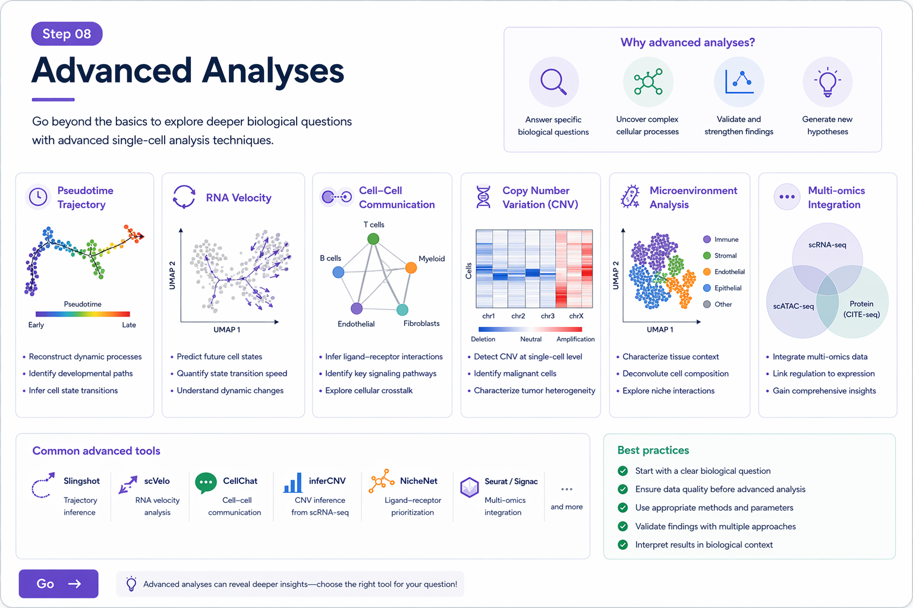

기본적인 scRNA-seq 분석이 끝난 뒤에는, 연구 질문에 따라 doublet detection, cell cycle scoring, CNV inference, trajectory / pseudotime, cell-cell communication 같은 고급 분석으로 확장할 수 있습니다.
doublet은 하나의 barcode에 두 개 이상의 세포가 함께 들어간 경우입니다. QC에서 일부 의심할 수 있지만, 보다 정교하게는 전용 도구를 사용합니다.
library(DoubletFinder)
# 예시 workflow (Seurat object 기반)
sweep.res <- paramSweep_v3(obj, PCs = 1:20, sct = FALSE)
sweep.stats <- summarizeSweep(sweep.res, GT = FALSE)
bcmvn <- find.pK(sweep.stats)
# 적절한 pK 선택 후
obj <- doubletFinder_v3(
obj,
PCs = 1:20,
pN = 0.25,
pK = 0.09,
nExp = 200,
reuse.pANN = FALSE,
sct = FALSE
)
세포 주기(cell cycle)는 clustering과 DEG 해석에 영향을 줄 수 있는 주요 biological confounder 중 하나입니다.
s.genes <- cc.genes$s.genes
g2m.genes <- cc.genes$g2m.genes
obj <- CellCycleScoring(
obj,
s.features = s.genes,
g2m.features = g2m.genes,
set.ident = FALSE
)
head(obj@meta.data[, c("S.Score", "G2M.Score", "Phase")])
필요에 따라 cell cycle effect를 regression에 포함시킬 수도 있습니다.
obj <- ScaleData(obj, vars.to.regress = c("S.Score", "G2M.Score"))
종양 샘플에서는 malignant cell을 추정하기 위해 copy number variation(CNV) 패턴을 inference하는 경우가 많습니다. 대표적으로 inferCNV가 많이 사용됩니다.
library(infercnv)
infercnv_obj <- CreateInfercnvObject(
raw_counts_matrix = counts_matrix,
annotations_file = "cell_annotations.txt",
delim = "\t",
gene_order_file = "gene_order.txt",
ref_group_names = c("normal")
)
infercnv_obj <- infercnv::run(
infercnv_obj,
cutoff = 0.1,
out_dir = "infercnv_output",
cluster_by_groups = TRUE,
denoise = TRUE,
HMM = TRUE
)
세포가 연속적인 상태 변화를 겪는 경우, cluster보다는 trajectory 또는 pseudotime 관점이 더 적절할 수 있습니다.
library(monocle3)
cds <- as.cell_data_set(obj)
cds <- cluster_cells(cds)
cds <- learn_graph(cds)
cds <- order_cells(cds)
plot_cells(cds, color_cells_by = "pseudotime")
pseudotime은 “진짜 시간”이 아니라, 발현 변화의 연속성을 기반으로 추정한 상대적 순서입니다.
spliced / unspliced transcript 정보를 이용하면 세포 상태 변화의 방향성을 추정할 수 있습니다. 보통 scVelo 또는 velocyto 기반 분석이 사용됩니다.
# Python ecosystem에서 주로 수행
# scVelo 예시 개념
import scvelo as scv
scv.pp.filter_and_normalize(adata)
scv.pp.moments(adata)
scv.tl.velocity(adata)
scv.tl.velocity_graph(adata)
scv.pl.velocity_embedding_stream(adata, basis='umap')
서로 다른 세포 집단 간 ligand-receptor 상호작용을 추정하여, 세포 간 communication network를 해석할 수 있습니다.
library(CellChat)
cellchat <- createCellChat(object = obj, group.by = "celltype")
cellchat <- addMeta(cellchat, meta = obj@meta.data)
cellchat <- setIdent(cellchat, ident.use = "celltype")
cellchat <- subsetData(cellchat)
cellchat <- identifyOverExpressedGenes(cellchat)
cellchat <- identifyOverExpressedInteractions(cellchat)
cellchat <- computeCommunProb(cellchat)
cellchat <- computeCommunProbPathway(cellchat)
cellchat <- aggregateNet(cellchat)
전사인자(transcription factor) 네트워크를 추정하여 세포 상태를 조절하는 핵심 regulator를 탐색할 수 있습니다. 대표적으로 SCENIC이 사용됩니다.
# SCENIC workflow는 보통 pySCENIC 또는 R SCENIC 사용
# 개념적 단계:
# 1. co-expression network 구성
# 2. motif enrichment로 regulon 정의
# 3. 각 cell에서 regulon activity score 계산
| 연구 질문 | 적합한 고급 분석 |
|---|---|
| 이상한 cluster가 doublet인지 궁금하다 | DoubletFinder, Scrublet |
| cell cycle이 cluster를 흔드는 것 같다 | CellCycleScoring, regression |
| 종양세포를 정상세포와 구분하고 싶다 | inferCNV, CopyKAT |
| 분화 또는 상태 전이 과정을 보고 싶다 | Monocle3, Slingshot, scVelo |
| 세포 간 상호작용을 보고 싶다 | CellChat, CellPhoneDB, NicheNet |
| 핵심 전사인자를 찾고 싶다 | SCENIC, pySCENIC |

기본 분석 이후에는 연구 질문에 따라 doublet, cell cycle, CNV, trajectory, communication 등의 고급 분석으로 확장할 수 있습니다.
Step 01. Introduction + Server
Step 02. QC and Filtering
Step 03. Normalization and Feature Selection
Step 04. Integration and Batch Correction
Step 05. Dimensional Reduction and Clustering
Step 06. Cell Type Annotation
Step 07. DEG and Pathway Analysis
Step 08. Advanced Analysis